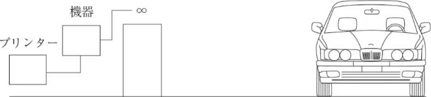

レース車両の排気音量測定に関する指導要綱
JAF の公式サイトではありません。JAF が公開する PDF を自動変換した非公式の検索用アーカイブです。記載内容は必ず JAF の原本 PDF で出典をご確認ください。 検索と AI 質問つきのビューアで開く
P.1レース車両の排気音量測定に関する指導要綱
レース車両の排気音量測定に関する指導要綱
本指導要綱は、ＪＡＦ公認レース競技会のオーガナイザーが開催場所の排気音量の影響を考慮し、当該競技会の特別規
則で最大値を規定する場合の測定方法として、ＪＡＦモータースポーツ専門部会・技術部会が検討したものである。
１．測定の条件
１-１測定する車両の状態
測定を受ける車両は十分な暖機運転を行った後、手動変速機付車両はクラッチを接続した状態の中立位置、自動
変速機付車両は中立位置の状態とする。
１-２測定車両は、参加者によりエンジンの回転数を最大出力時の回転数の７５％±１００ｒｐｍで無負荷運転を続け、その間の音量の最大値が測定される。
１-３測定する場所
測定場所は屋外の平坦な路面で、車両の最外側から少なくとも１ｍの範囲が舗装され、車両およびマイクロホン
から３ｍ以上に音響障害物がないこと。
１-４暗騒音の考慮
測定時の周囲の音量レベル（暗騒音）が測定された排気音量レベルに対し１０ｄＢ（Ａ）より低い場合は測定値は
有効とする。
２．測定装置
ＪＩＳ（Ｃ1505と同等）の検定を有する音量測定機器を用い、Ａ特性を使用する。
３．測定の方法
３-１マイクロホンの位置
マイクロホンは排気口と同じ高さで水平に保ち排気口に向ける。
排気ガスの流れの中心とみなされる軸に対し４５°±１０°の角度の範囲内とする。
排気口が２個以上ある場合は大きい方で、同サイズの場合は前後では後方、幅は外側で測定する。
排気口が車両の両側にある場合にはコースの外側のもので測定する。
３-２排気口と測定器間の距離は下記の音量対比表を参考に選択できる。
ただし、最大規制音量は表中の２重枠内の値を超えないこと。
| 距離m | 音量レベル dB（Ａ） | ||||
| ３ | １２０ | １１０ | １０５ | １００ | ９０ |
| ２ | １２４ | １１４ | １０９ | １０４ | ９４ |
| １ | １３０ | １２０ | １１５ | １１０ | １００ |
| ０．５ | １３５ | １２５ | １２０ | １１５ | １０５ |
参考
PWL ≒ SPL＋20logr＋8
PWL：音源のパワーレベル
SPL：ｒm離れた位置での音圧レベル
３-３これ以外の測定方法を用いる場合はその詳細を特別規則に明記すること。
（下図に従った走行中の競技車両に対する音量測定が推奨される。）
